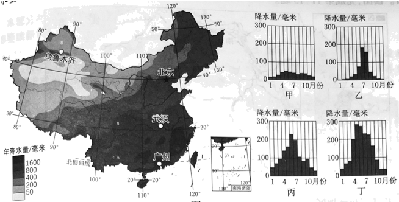

2023年北京中考地理 第5题分析降水量分布状况是认识区域差异的重要内容。图为中国年降水量分布和国地降水量柱状图。读图，完成下面小题。5. 我国年降水量（ ）A. 随纬度升高而逐渐增加B. 沿北纬40°线自东向西递增C 沿东经120°线自北向南递减D. 自东南沿海向西北内陆递减
 沿东经120°线自北向南递减D. 自东南沿海向西北内陆递减
沿东经120°线自北向南递减D. 自东南沿海向西北内陆递减